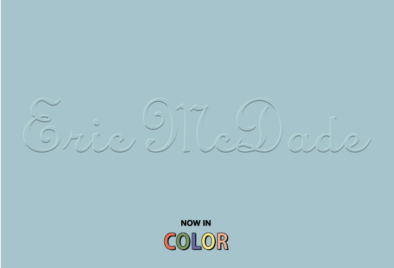
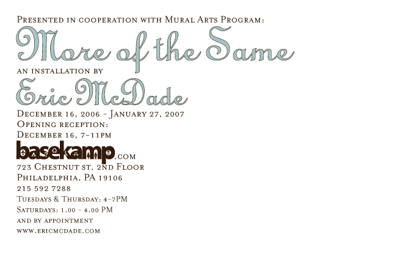

basekamp space > Events
More of the Same - Eric McDade
Date: 16-Dec-2006; 7.00 to 11.00 PM (exhibition through Jan 27, 2007)
Location: Basekamp space
Description: Opening reception. Musical entertainment will be provided by Pawel.

The sidewalks are full of love's lonely children: "More of the Same" by Eric McDade.
Back to dish out more finger-pointing and blame-shifting, Eric McDade turns his creative attention to the same fodder that's gotten him nowhere fast: relationships. Only this time, it's not a survey of individualized confessions and condemnations he's offering up like so many plates of ambrosia at a family picnic. Using the metaphor of children overindulging on sweets, this new mural-in-the-round conveys a narrative that explores the cyclical nature of past relationships, from first encounter to licking one's wounds.
In the landscape ruled, or at least inhabited by children, a sugar overdose is marked by insomnia, exhaustion, red eyes and crying jags. In search of respite, the children are led to a cottage in the woods with promises of wish fulfillment. But instead, they unwittingly become key ingredients in their host's enterprise. After which, they're turned loose to sleepwalk their way through the evening landscape, which is littered with dangers both natural and man-made. Eventually, as in the aftermath of a relationship, everyone finds their way back to home base relatively safely, if a bit damaged and dazed, and maybe even looking forward to their next helping of sweets.
While McDade may not be reading us direct passages from his padlocked diary anymore, he's definitely staying true to form by maintaining his nearly-formulaic "innocents in peril" approach to weaseling out of accepting responsibility for his past faults and mistakes. "Love is a trap" seems to be the mantra here, and it is repeated not so much to reach Nirvana, but just to get back to normal with as much of ourselves still in tact as we can manage.